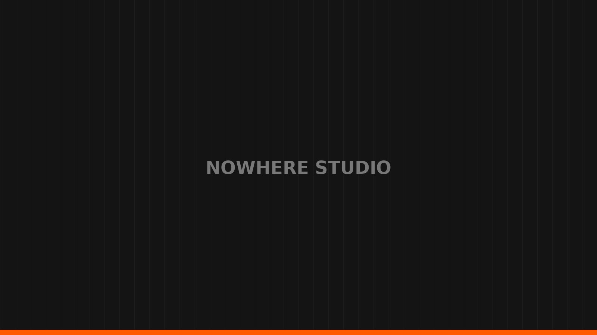

Projetos acadêmicos
Exploração de direção de arte, identidade visual, tipografia, apresentações e motion aplicada a briefings acadêmicos.
Portfólio de projetos em Motion 2D, Motion 3D, apresentações, posts e experiências visuais.

NOWHERE é um portfólio focado em criação visual e movimento. A seleção reúne trabalhos para clientes, estudos autorais e projetos acadêmicos em diferentes formatos.
Exploração de direção de arte, identidade visual, tipografia, apresentações e motion aplicada a briefings acadêmicos.
Estudos de tracking, integração 3D, shaders, iluminação, composição e experimentação visual.
Peças para redes sociais, vídeos comerciais, campanhas, animação de marcas e apresentações institucionais.
Filtre por categoria e abra qualquer projeto para ver os detalhes.
Uma estrutura simples para transformar intenção em comunicação visual.
Objetivo, público, mensagem e referências.
Conceito, linguagem e organização visual.
Design, animação, composição e refinamento.
Finalização adequada ao formato e à aplicação.